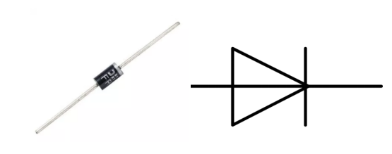

1.3.4 Relais¶
Einführung¶
In dieser Lektion lernen wir, ein Relais zu verwenden. Es ist eine der am häufigsten verwendeten Komponenten im automatischen Steuerungssystem. Wenn die Spannung, der Strom, die Temperatur, der Druck usw. den vorgegebenen Wert erreichen, überschreiten oder unterschreiten, wird das Relais den Stromkreis anschließen oder unterbrechen, um das Gerät zu steuern und zu schützen.
Komponenten¶

Prinzip¶
Diode
Eine Diode ist eine zweipolige Komponente in der Elektronik mit einem unidirektionalen Stromfluss. Es bietet einen geringen Widerstand in Richtung des Stromflusses und einen hohen Widerstand in der entgegengesetzten Richtung. Dioden werden meistens verwendet, um Schäden an Bauteilen zu vermeiden, insbesondere aufgrund elektromotorischer Kraft in Schaltkreisen, die normalerweise polarisiert sind.
Die beiden Anschlüsse einer Diode sind polarisiert, wobei das positive Ende als Anode und das negative Ende als Kathode bezeichnet wird. Die Kathode besteht üblicherweise aus Silber oder hat ein Farbband. Die Steuerung der Stromflussrichtung ist eines der Hauptmerkmale von Dioden - der Strom in einer Diode fließt von Anode zu Kathode. Das Verhalten einer Diode ähnelt dem Verhalten eines Rückschlagventils. Eine der wichtigsten Eigenschaften einer Diode ist die nichtlineare Stromspannung. Wenn eine höhere Spannung an die Anode angeschlossen ist, fließt Strom von Anode zu Kathode, und der Prozess wird als Vorwärtsvorspannung bezeichnet. Wenn jedoch die höhere Spannung an die Kathode angeschlossen ist, leitet die Diode keine Elektrizität, und der Prozess wird als Sperrvorspannung bezeichnet.
Relais
Wie wir vielleicht wissen, ist Relais ein Gerät, das verwendet wird, um eine Verbindung zwischen zwei oder mehr Punkten oder Geräten als Reaktion auf das angelegte Eingangssignal herzustellen. Mit anderen Worten, Relais stellen eine Isolation zwischen der Steuerung und dem Gerät bereit, da Geräte sowohl mit Wechselstrom als auch mit Gleichstrom arbeiten können. Sie empfangen jedoch Signale von einem Mikrocontroller, der mit Gleichstrom arbeitet, weshalb ein Relais erforderlich ist, um die Lücke zu schließen. Das Relais ist äußerst nützlich, wenn Sie eine große Menge an Strom oder Spannung mit einem kleinen elektrischen Signal steuern müssen.
Jedes Relais besteht aus 5 Teilen:
Electromagnet - It consists of an iron core wounded by coil of wires. When electricity is passed through, it becomes magnetic. Therefore, it is called electromagnet.
Armature - The movable magnetic strip is known as armature. When current flows through them, the coil is it energized thus producing a magnetic field which is used to make or break the normally open (N/O) or normally close (N/C) points. And the armature can be moved with direct current (DC) as well as alternating current (AC).
Spring - When no currents flow through the coil on the electromagnet, the spring pulls the armature away so the circuit cannot be completed.
Set of electrical contacts - There are two contact points:
Normally open - connected when the relay is activated, and disconnected when it is inactive.
Normally close - not connected when the relay is activated, and connected when it is inactive.
Formrahmen - Die Relais sind zum Schutz mit Kunststoff bedeckt.
Funktionieren des Relais
Das Funktionsprinzip des Relais ist einfach. Wenn das Relais mit Strom versorgt wird, fließen Ströme durch die Steuerspule. Infolgedessen beginnt der Elektromagnet zu erregen. Dann wird der Anker von der Spule angezogen, bewegliche Kontakt zusammezihen, wodurch eine Verbindung mit den normalerweise offenen Kontakten hergestellt wird. Der Stromkreis mit der Last wird also erregt. Ein Unterbrechen des Stromkreises wäre dann ein ähnlicher Fall, da der bewegliche Kontakt unter der Kraft der Feder zu den normalerweise geschlossenen Kontakten hochgezogen wird. Auf diese Weise kann das Ein- und Ausschalten des Relais den Zustand eines Lastkreises steuern.

Schematische Darstellung¶

Experimentelle Verfahren¶
Schritt 1: Bauen Sie die Schaltung auf.

Für Benutzer in C-Sprache¶
Schritt 2: Öffnen Sie die Kodedatei.
cd /home/pi/davinci-kit-for-raspberry-pi/c/1.3.4
Schritt 3: Kompilieren Sie den Code.
gcc 1.3.4_Relay.c -lwiringPi
Schritt 4: Führen Sie die ausführbare Datei aus.
sudo ./a.out
Nachdem die Kode ausgeführt wurde, leuchtet die LED auf. Außerdem können Sie ein Ticktock hören, das durch das Unterbrechen des normalerweise geschlossenen Kontakts und das Schließen des normalerweise offenen Kontakts verursacht wird.
Kode
#include <wiringPi.h>
#include <stdio.h>
#define RelayPin 0
int main(void){
if(wiringPiSetup() == -1){ //when initialize wiring failed, print message to screen
printf("setup wiringPi failed !");
return 1;
}
pinMode(RelayPin, OUTPUT); //set GPIO17(GPIO0) output
while(1){
// Tick
printf("Relay Open......\n");
digitalWrite(RelayPin, LOW);
delay(1000);
// Tock
printf("......Relay Close\n");
digitalWrite(RelayPin, HIGH);
delay(1000);
}
return 0;
}
Kode Erklärung
digitalWrite(RelayPin, LOW);
Stellen Sie den I/O -Anschluss auf einen niedrigen Niveau (0V) ein, damit der Transistor nicht erregt und die Spule nicht mit Strom versorgt wird. Es gibt keine elektromagnetische Kraft, daher öffnet sich das Relais und die LED leuchtet nicht.
digitalWrite(RelayPin, HIGH);
Stellen Sie den I/O -Anschluss auf einen hohen Niveau (5V) ein, um den Transistor mit Strom zu versorgen. Die Spule des Relais wird mit Strom versorgt und erzeugt elektromagnetische Kraft. Das Relais schließt, die LED leuchtet auf.
Für Python-Benutzer¶
Schritt 2: Öffnen Sie die Codedatei.
cd /home/pi/davinci-kit-for-raspberry-pi/python
Schritt 3: Ausführen.
sudo python3 1.3.4_Relay.py
Während der Code läuft, leuchtet die LED. Außerdem können Sie ein Ticktock hören, das durch das Unterbrechen des normalerweise geschlossenen Kontakts und das Schließen des normalerweise offenen Kontakts verursacht wird.
Kode
#!/usr/bin/env python3
import RPi.GPIO as GPIO
import time
# Set GPIO17 as control pin
relayPin = 17
# Define a setup function for some setup
def setup():
# Set the GPIO modes to BCM Numbering
GPIO.setmode(GPIO.BCM)
# Set relayPin's mode to output,
# and initial level to High(3.3v)
GPIO.setup(relayPin, GPIO.OUT, initial=GPIO.HIGH)
# Define a main function for main process
def main():
while True:
print ('Relay open...')
# Tick
GPIO.output(relayPin, GPIO.LOW)
time.sleep(1)
print ('...Relay close')
# Tock
GPIO.output(relayPin, GPIO.HIGH)
time.sleep(1)
# Define a destroy function for clean up everything after
# the script finished
def destroy():
# Turn off LED
GPIO.output(relayPin, GPIO.HIGH)
# Release resource
GPIO.cleanup()
# If run this script directly, do:
if __name__ == '__main__':
setup()
try:
main()
# When 'Ctrl+C' is pressed, the child program
# destroy() will be executed.
except KeyboardInterrupt:
destroy()
Kode Erklärung
GPIO.output(relayPin, GPIO.LOW)
Stellen Sie die Pins des Transistors auf einen niedrigen Niveau ein, damit das Relais geöffnet wird. Die LED leuchtet nicht.
time.sleep(1)
1 Sekunde warten.
GPIO.output(relayPin, GPIO.HIGH)
Stellen Sie die Pins des Transistors auf einen niedrigen Niveau ein, um das Relais zu betätigen. Die LED leuchtet auf.
Phänomen Bild¶